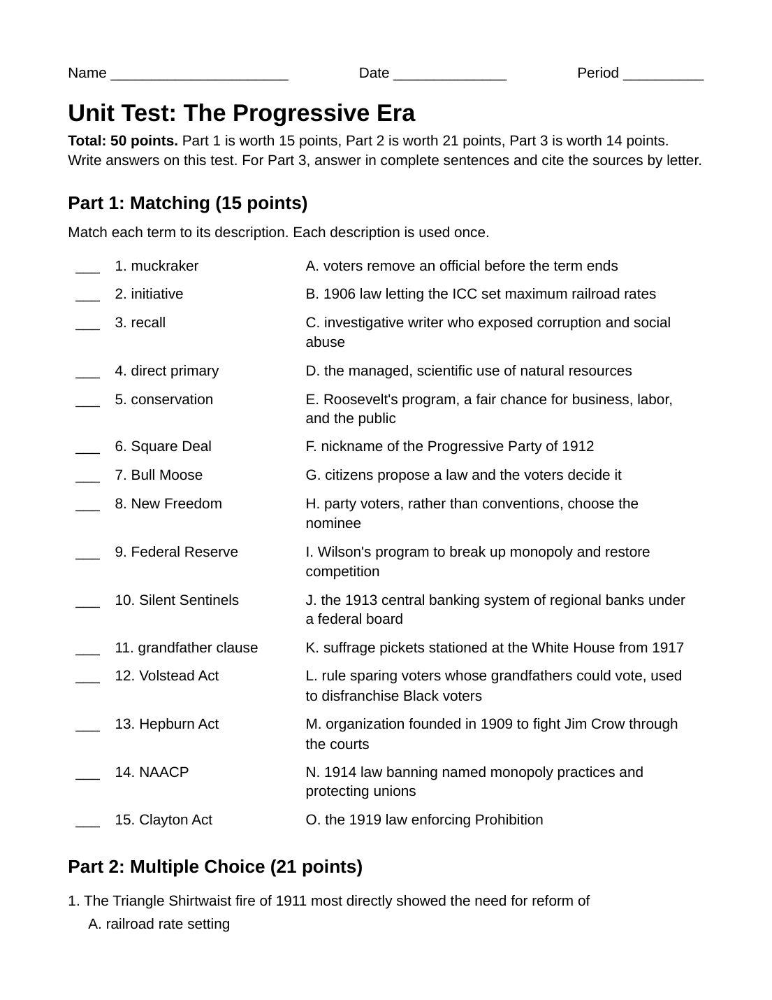

THE PROGRESSIVE ERA · PREVIEW 3 OF 3
The test, and the coverage check


The lessons carry the same tags. Pick your materials in the Humanities Curriculum Group planner and it checks your picks against all 15 entries before the test lands on the calendar, naming anything the test covers that your picks do not.